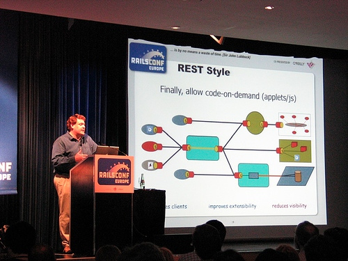

认识RESTful
在前后端分离的应用模式里，后端API接口如何定义？
对于接口的请求方式与路径，每个后端开发人员可能都有自己的定义方式，风格迥异。
是否存在一种统一的定义方式，被广大开发人员接受认可的方式呢？
这就是被普遍采用的API的RESTful设计风格。
1. 起源
REST这个词，是Roy Thomas Fielding在他2000年的博士论文中提出的。

Fielding是一个非常重要的人，他是HTTP协议（1.0版和1.1版）的主要设计者、Apache服务器软件的作者之一、Apache基金会的第一任主席。所以，他的这篇论文一经发表，就引起了关注，并且立即对互联网开发产生了深远的影响。
2. 名称
Fielding将他对互联网软件的架构原则，定名为REST，即Representational State Transfer的缩写。维基百科称其为“具象状态传输”，国内大部分人理解为“表现层状态转化”。
RESTful是一种开发理念。维基百科说：REST是设计风格而不是标准。 REST描述的是在网络中client和server的一种交互形式；REST本身不实用，实用的是如何设计 RESTful API（REST风格的网络接口）,一种万维网软件架构风格。
我们先来具体看下RESTful风格的url,比如我要查询商品信息，那么
非REST的url：http://.../queryGoods?id=1001&type=t01
REST的url:http://.../t01/goods/1001
可以看出REST特点：url简洁，将参数通过url传到服务器，而传统的url比较啰嗦，而且现实中浏览器地址栏会拼接一大串字符，想必你们都见过吧。但是采用REST的风格就会好很多，现在很多的网站已经采用这种风格了，这也是潮流方向，典型的就是url的短化转换。